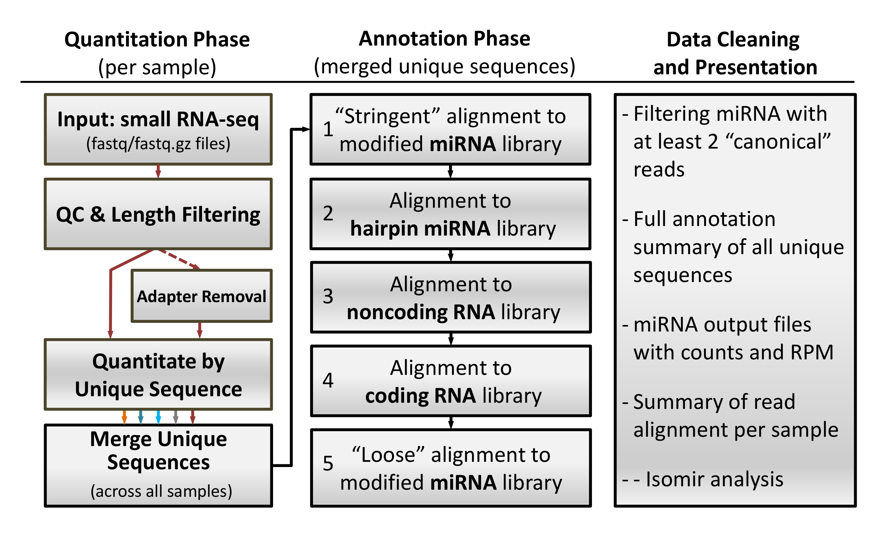

miRge
miRge is a logical, ultrafast, small RNA-seq solution to process samples in a highly multiplexed fashion, resulting in dramatically decreased computational requirements when processing sets of samples in a single run. It utilizes a unique sequential alignment algorithm for annotation of small RNA-seq data. Output is given for miRNAs as raw reads and reads per million (RPM) in addition to isomiR data and reads for all other RNA species (tRNA, rRNA, snoRNA, mRNA). IsomiR entropy can be determined for each sample or across samples in a multiplex run. In head-to-head comparisons for single sample analyses with miRExpress 2.0, sRNAbench, omiRAs and miRDeep2, miRge was 3 to 28-fold faster and always aligned more miRNA reads per sample. In a single multiplex experiment, we fully annotated all RNA species in 100 separate samples in 40 minutes. These features make miRge an ideal tool for high-throughput users. miRge is multithreaded to take advantage multicore computer architectures.
miRge was designed in Linux (Ubuntu 14+ LTS) but is compatible with other platforms.
Dependencies, miRge utlizes the following tools and perl modules. Please install as per the respective developers instructions, links are provided below:
To install miRge on your Linux machine:
News :
Updates will be reported here.
Running miRge
Usage:
perl miRge.pl [--help] [--version] [--adapter
none|illumina|ion|sequence(s)] [--species human|mouse|rat|fruitfly|nematode|zebrafish|custom_name] [--CPU
#] [--diff-isomirs] [--phred64] [--bowtie /location] [--cutadapt /location] --SampleFiles sample1.fastq,sample2.fastq,...
Examples:
perl miRge.pl --help
perl miRge.pl --adapter illumina --species human --SampleFiles seq_file.fastq
perl miRge.pl --adapter ion --species human --CPU 8 --diff-isomirs --SampleFiles human1.fastq,human2.fastq,human3.fastq
perl miRge.pl --species mouse --diff-isomirs --phred64 --bowtie /usr/local/bin/bowtie --SampleFiles sample1.fastq,sample2.fastq
The miRge method
miRge runs sequentially through a number of prealignment and alignment steps. It optionally uses cutadapt to filter and/or trim sequences. It then collapses reads together, creates a single file from multiple fastq runs (if multiple runs are provided) and brings this material through the alignment steps. Of note, it aligns with both stringent and relaxed parameters to miRNAs to capture perfect miRNA hits and isomiRs only after better hits have been purged by alignment to other RNA species.
